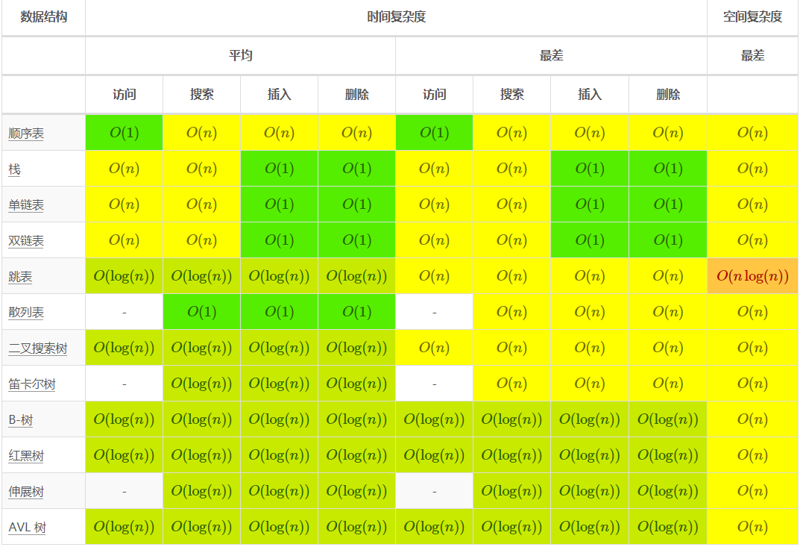

目录
Introduction
1.性能之颠
2.剑指Offer
3.高性能MySQL
4.AWS SAA认证
1.AWS知识点
2.AWS认证英语学习
3.AWS的其他服务
4.AWS Github Study Guide
5.Head First设计模式
1.设计模式和案例
2.设计模式的个人理解
6.TiDB PCTA认证
1.TiDB 基础知识
2.TiDB in Action: 原理和特性
3.TiDB in Action: 部署与管理
4.TiDB in Action: 故障排查
5.TiDB in Action: 最佳实践
7.算法
1.数据结构、数组排序、堆操作
2.数据结构和算法之美
Published with GitBook
1.数据结构、数组排序、堆操作
数据结构、数组排序、堆操作
资料
计算机科学常见算法复杂度
数据结构

数据排序
堆操作
大O复杂度
results matching "
"
No results matching "
"